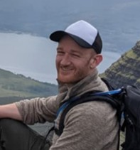

ABOUT THIS RESOURCE
'Where is the lesion? What is the lesion?'
Neurology is often viewed as difficult by students and doctors alike. Despite this, neurological disorders are very common - globally, they are the leading cause of disability and the second biggest cause of death.
People consistently rate neurology the most challenging part of the medical curriculum. Reasons include the volume of material needed to cover, and the gulf between the basic science - particularly anatomy - and the clinical method: taking a history and performing an examination, then making a diagnosis.
This gulf should not exist. The clinical depends on the science. Doctors should not learn the science without any clinical context - they are not anatomists - while attempting a neurological assessment without anatomy is impossible.
This resource aims to marry the two. It takes the form of illustrative cases, all derived from patients encountered in my practice. It is dedicated to them, in the hope that their examples help people learn neurology - and that it will ultimately help people with neurological conditions.
It concentrates on focal lesions which produce clinical features that can be localised to a specific point - for example an area of cortex or a peripheral nerve. As a result, it is limited to processes that produce focal lesions. This is deliberate - these ‘pure’, solitary lesions are the best way to learn clinical neuroanatomy and localisation skills.
There is much more to neurology than localising lesions - but it's a good place to start, and a crucial skill for anybody seeing patients with neurological problems.
About the author - Dr. Neil Watson MBChB BSC (Hons) MD FEBN

I am a final-year neurology resident based in Edinburgh, the beautiful capital city of Scotland.
I graduated from the University of Edinburgh in 2013 and also achieved a 1st class Honours degree in Neuroscience. I have completed the UK and European board exams in neurology and was ranked in the top 10 European candidates in 2024.
I am passionate about clinical diagnosis and the art of neurology, as well as neuroanatomy - all three attracted me to the specialty back in 2008 as a student, and continue to fascinate me half my lifetime later.
I have a major interest in medical education, working with medical students and doctors in training, including giving lectures with the Royal College of Physicians, Edinburgh, and working as an anatomy demonstrator. My main focus in education is always about diagnosis - and how to cultivate clinical reasoning so that anybody, no matter how junior or generalist, can feel more confident approaching neurological problems.
My clinical interests include cognition, movement disorders and neuro-infections. My research background is in prion diseases, and I completed a medical doctorate on the diagnosis of Creutzfeldt-Jakob disease in 2023 during a specialist fellowship in neurodegeneration with the University of Edinburgh.
I believe there is no better way to learn neurology than through interactive cases - the more interactive the better! I'd love to sit and talk through these cases with learners in person, but I hope this helps as the 'next best thing'.
I wrote in a manner deliberately phrased to walk you through each case - the idea is to take a journey through the relevant anatomy and bring it to life. When you read them, put yourself in the imaginary position of assessing the patient, and try to really think where and what the lesion may be, before you proceed to the 'walk-through'.
I made this resource both to help other learners and to improve my own knowledge of clinical neuroanatomy. It's been a rewarding experience so far and I have learned a great deal from it. I plan to continue compiling these cases for years to come, building a large lesion study bank - and am excited for what's ahead!
Associate editor - Dr. Fraser Brown MBChB
This site started as a loose idea for a blog, then a book, then mutated into a full website. The writing is my own, unassisted by AI (see below) - and clearly the potential for human error is enormous.
I'm indebted to my fellow neurology resident and friend, Dr Fraser Brown, for his tireless support for this project and his editing efforts. You can thank him for this being much more readable, focused, accurate, and with fewer mislabelled diagrams and careless typos.
Dr Brown shares my fascination with this subject and has found all sorts of gems in terms of books, papers and his own cases since I started this site, and I've no doubt he will contribute much more than just editing as the project evolves.
The cases
These cases are all real, derived from people I assessed in my job as a neurologist. They (or their next-of-kin) consented to their case being shared in an anonymised manner as part of a free, educational resource. I am hugely grateful to them for this.
A small number deceased patients were unable to consent. For these, I have followed the UK General Medical Council guidance and changed details (including demographics such as age and sex) in a way that protects anonymity without affecting the educational 'lesson'. Nothing is said of these individuals bar the core, minimal clinical information needed for diagnosis, and the scan images used are not identifiable. The conditions are also not of the level of rarity that might make them identifiable to others.
As you work through the cases, please do think of the people they concern and who suffered the effects of these lesions - I hope you can spare a moment of gratitude to them all.
Remember also that the diagnosis - which is the focus of this site - is just the beginning. What happens next is the 'real neurology', where many of the serious, life-impacting effects come. Neurological disorders are the commonest cause of death and disability in the world - and you can see the devastating impact of these conditions when you read these cases.
The human impact of all this is necessarily stripped back here to focus on localisation - but if real-world neurology took such a reductionist approach, it would be a very limited business.
No matter how intellectually stimulating you may find localisation, never lose sight of the people affected. They, rather than their lesions, are what makes neurology rewarding.
Illustrations
I made all the pictures and videos digitally, drawing them myself. They are all originals.
The majority are not meant to be anatomically life-like or drawn to scale - they are schematics, which show the key areas and tracts and how things connect, and the functional consequences of lesions.
I drew original shapes, but made extensive studies of anatomical resources and real brain scans to help me learn the key structures with all their features. For some diagrams I sketched outlines (e.g. cortical contours) using MRI scans, including from people with normal imaging who consented to me using their scans in this way. For bony structures I took photos of a model skeleton and drew those, adding layers such as muscles, nerves and glands where needed.
Scans used are from my own practice. I covered facial outlines in sagittal views to reduce idenfitiability by characteristic facial structures. This may seem excessive, but hopefully highlights the extent to which I want to protect individuals' confidentiality in my work.
The aim is always to show things of functional usage to clinicians, but in images, I usually labelled other nearby structures to help orientate the viewer to the 'neighbourhood' surrounding the area being shown. The point is not to memorise all of this - rather, it's to help visualise particular points of nervous system in their surroundings.
Use of AI statement
Words and illustrations are all my own. The only use of AI in producing this resource was to help me with coding - I'm not a web designer and had no experience of HTML and CSS before this.
ChatGPT helped me make something that looks exactly like I intended - but it had no hand in the content itself and was only a guide to making a web page and troubleshooting glitches.
Short messages of thanks
Firstly, to all the neurologists who mentored me and showed me how it's done. Way too many to name, but particular thanks to Anoop, Tatiana, Tony, Suvankar, Louise, Richard, Jon and Myles.
Secondly, my family - none of them medical, yet always interested and supportive. Special thanks to Sam for helping me with web design.
Finalmente, Verónica - sempre a minha inspiração.